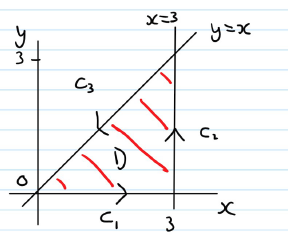

Jonathan Crofts
Nottingham Trent University
Recall from last week that to integrate a continuous function $f(x,y,z)$ over a curve $C$:
Find a parametrisation of $C$,
\[ \mathbf{r}(t) = (g(t), h(t), k(t)), \quad t\in[a, b] \]Evaluate the integral as
\[ \int_C f(x,y,z)\,\mathrm{d}s = \int_a^b f(g(t),h(t),k(t))|\mathbf{r}'(t)|\,\mathrm{d}t \]Note that if $f$ has constant value 1, then the integral of $f$ over $C$ gives the length of $C$
Line integrals have the useful property that if a curve $C$ is made by joining a finite number of curves $C_1, C_2, \ldots, C_n$ end to end, then the integral of a function over $C$ is the sum of the integrals over the curves that make it up
The line integral along a curve changes sign when the curve's orientation is reversed. Specifically, the integral along the reversed curve, denoted $-C$, is the negative of the integral along the original curve $C$, i.e.
Let
\[ \mathbf{F} = \left(y^2-x^2\right)\mathbf{i}+\left(x^2+y^2\right)\mathbf{j} \]and let $C$ be the boundary of the region $\mathcal{D}$ in the first quadrant bounded by the triangle $y=0$, $x=3$ and $y=x$, oriented counter-clockwise.
(a) Sketch the region $\mathcal{D}$
(b) Evaluate $\displaystyle \oint_C\mathbf{F}\cdot\mathrm{d}\mathbf{r}$ directly by parametrising $C$
We begin by drawing the region $\mathcal{D}$
Note also that $C = C_1 +C_2+C_3$ consists of three sections
(traversed counter-clockwise)
We have three integrals to compute
$C_1:$
\[ \begin{align*} \mathbf{r}(t) &= (3t,0) \quad t\in[0,1]\\ \mathbf{r}'(t) &= (3, 0)\\ \mathbf{F}(\mathbf{r}(t)) &= (-9t^2, 9t^2)\\ \end{align*} \]Therefore
\[ \begin{align*} \int_{C_1}\mathbf{F}\cdot\mathrm{d}\mathbf{r} &= \int_0^1\mathbf{F}\cdot\frac{\mathrm{d}\mathbf{r}}{\mathrm{d}t}\,\mathrm{d}t\\ &=\int_0^1 -27t^2\,\mathrm{d}t\\ &=\bigg[-9t^3\bigg]_0^1 = -9 \end{align*} \]We have three integrals to compute
$C_2:$
\[ \begin{align*} \mathbf{r}(t) &= (3,3t) \quad t\in[0,1]\\ \mathbf{r}'(t) &= (0, 3)\\ \mathbf{F}(\mathbf{r}(t)) &= (9t^2-9, 9t^2+9)\\ \end{align*} \]Therefore
\[ \begin{align*} \int_{C_2}\mathbf{F}\cdot\mathrm{d}\mathbf{r} &= \int_0^1\mathbf{F}\cdot\frac{\mathrm{d}\mathbf{r}}{\mathrm{d}t}\,\mathrm{d}t\\ &=27\int_0^1 t^2+1\,\mathrm{d}t\\ &=27\bigg[\frac{1}{3}t^3+t\bigg]_0^1 = 27\left(\frac{4}{3}\right) = 36 \end{align*} \]We have three integrals to compute
$-C_3:$
\[ \begin{align*} \mathbf{r}(t) &= (3t,3t) \quad t\in[0,1]\\ \mathbf{r}'(t) &= (3, 3)\\ \mathbf{F}(\mathbf{r}(t)) &= (0, 18t^2)\\ \end{align*} \]Therefore
\[ \begin{align*} \int_{-C_3}\mathbf{F}\cdot\mathrm{d}\mathbf{r} &= \int_0^1\mathbf{F}\cdot\frac{\mathrm{d}\mathbf{r}}{\mathrm{d}t}\,\mathrm{d}t\\ &=\int_0^1 54t^2\,\mathrm{d}t\\ &=\bigg[18t^3\bigg]_0^1 = 18 \end{align*} \]The final result is $\int_{C_3}\mathbf{F}\cdot\mathrm{d}\mathbf{r}=-18 \implies$
\[ \color{red}{\boxed{\color{white}{ \int_{C}\mathbf{F}\cdot\mathrm{d}\mathbf{r} = \int_{C_1}\mathbf{F}\cdot\mathrm{d}\mathbf{r}+\int_{C_2}\mathbf{F}\cdot\mathrm{d}\mathbf{r} +\int_{C_3}\mathbf{F}\cdot\mathrm{d}\mathbf{r} = -9 + 36 - 18 = 9 }}} \]Let $\mathbf{F}$ be a field defined on an open region $\mathcal{D}$ in space, and suppose for any two points $A$ and $B$ the integral
\[ \int_A^B\mathbf{F}\cdot\mathrm{d}\mathbf{r} \]is the same over all paths. Then the integral is said to be path independent in $\mathcal{D}$ and the field $\mathbf{F}$ is said to be conservative on $\mathcal{D}$
The word conservative here comes from physics where it refers to fields in which energy is conserved
If $\mathbf{F}$ is a field defined on $\mathcal{D}$ and
\[ \mathbf{F} = \nabla f \]for some scalar function $f$ on $\mathcal{D}$, then $f$ is called a potential function for $\mathbf{F}$
Importantly, it can be show that in this case the integral $\displaystyle \int_C \mathbf{F}\cdot\mathrm{d}\mathbf{r}~$ greatly simplifies:
\[ \color{red}{\boxed{\color{white}{ \int_C \mathbf{F}\cdot\mathrm{d}\mathbf{r} = \int_C\nabla f\cdot\mathrm{d}\mathbf{r} = f(A)-f(B) }}} \]where $A, B$ are respectively the start and end points of $C$
This is the vector calculus equivalent of the Fundamental Theorem of Calculus
The result overpage tells us that for a conservative field $\mathbf{F}$ the line integral $\int_C\mathbf{F}\cdot\mathrm{d}\mathbf{r}$ depends only on the endpoints and not the specific path joining them
The following statements are equivalent:
Find the work done by the conservative field
\[ \mathbf{F} = (yz, xz, xy) = \nabla\left(xyz\right) \]along any smooth curve $C$ joining $(-1, 3, 9)$ to $(1, 6, -4)$
With $f(x,y,z) = xyz$, we have
\[ \begin{align*} \int_C\mathbf{F}\cdot\mathrm{d}\mathbf{r} &=\int_A^B \nabla f\cdot \mathrm{d}\mathbf{r}\\ &= f(B)-f(A)\\ &= \left.xyz\right|_{(1, 6, -4)} - \left.xyz\right|_{(-1, 3 , 9)}\\ &=(1)(6)(-4) - (-1)(3)(9)\\ &=-24+27 = 3 \end{align*} \]Here we were provided with the potential function, but what if we aren't ...
Let $\mathbf{F} = (g(x,y,z), h(x,y,z), k(x,y,z))$ be a field, then $\mathbf{F}$ is conservative if and only if
\[ \frac{\partial k}{\partial y} = \frac{\partial h}{\partial z}, \quad \frac{\partial g}{\partial z} = \frac{\partial k}{\partial x}, \quad \text{and}\quad \frac{\partial h}{\partial x} = \frac{\partial g}{\partial y} \]When we know $\mathbf{F}$ is conservative then we usually want to find a potential function
This requires solving $\nabla f = \mathbf{F}$, i.e.
\[ \left(\frac{\partial f}{\partial x}, \frac{\partial f}{\partial y}, \frac{\partial f}{\partial z}\right) = \left(g(x,y,z), h(x,y,z), k(x,y,z)\right) \]Or integrating
\[ \color{red}{\boxed{\color{white}{ \frac{\partial f}{\partial x} = g, \quad\frac{\partial f}{\partial y} = h, \quad\frac{\partial f}{\partial z} = k }}} \]Show that
\[ \mathbf{F} = (e^x\cos{y}+yz, xz-e^x\sin{y}, xy+z) \]is conservative and find a potential function for it
Applying the test to
\[ g = e^x\cos{y}+yz, \quad h = xz-e^x\sin{y}, \quad k = xy+z \]we find
\[ \frac{\partial k}{\partial y} = x = \frac{\partial h}{\partial z},\quad\frac{\partial g}{\partial z} = y = \frac{\partial k}{\partial x}, \quad\frac{\partial h}{\partial x} = -e^x\sin{y}+z = \frac{\partial g}{\partial y} \]Proving the field is conservative
Thus there exists an $f$ with $\nabla f=\mathbf{F}$
We find $f$ by integrating
\[ \frac{\partial f}{\partial x} = e^x\cos{y}+yz,\quad\frac{\partial f}{\partial y} = xz-e^x\sin{y},\quad \frac{\partial f}{\partial z} = xy+z \]Integrating the first equation wrt $x$:
\[ f(x,y,z) = e^x\cos{y} + xyz + M(y,z) \]Caclulating $\partial f/\partial y$ and matching with our previous expression gives
\[ -e^x\sin{y} + xz + \frac{\partial M}{\partial y} = -e^x\sin{y} + xz \]so $\partial M/\partial y = 0$ meaning $M$ is a function of $z$ only so
\[ f(x,y,z) = e^x\cos{y}+xyz+N(z) \]Computing $\partial f/\partial z$ and matching with our previous expression gives \[ xy+\frac{\partial N}{\partial z} = xy+z \]
so
\[ N(z) = \frac{z^2}{2} + C \]Hence
\[ \color{red}{\boxed{\color{white}{ f(x,y,z) = e^x\cos{y}+xyz+\frac{z^2}{2}+C }}} \]